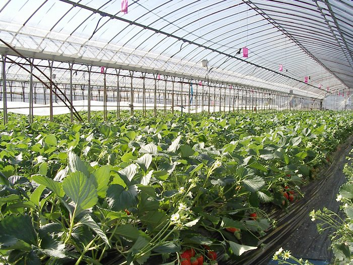
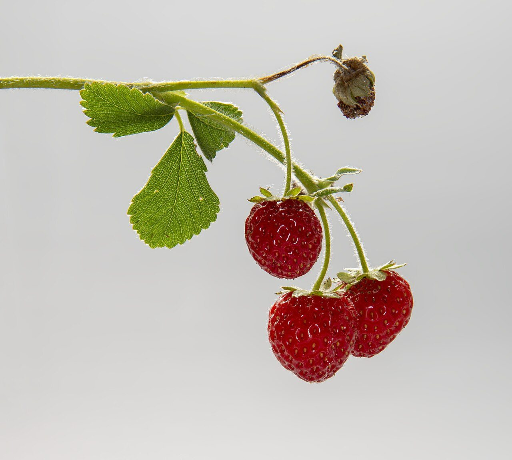
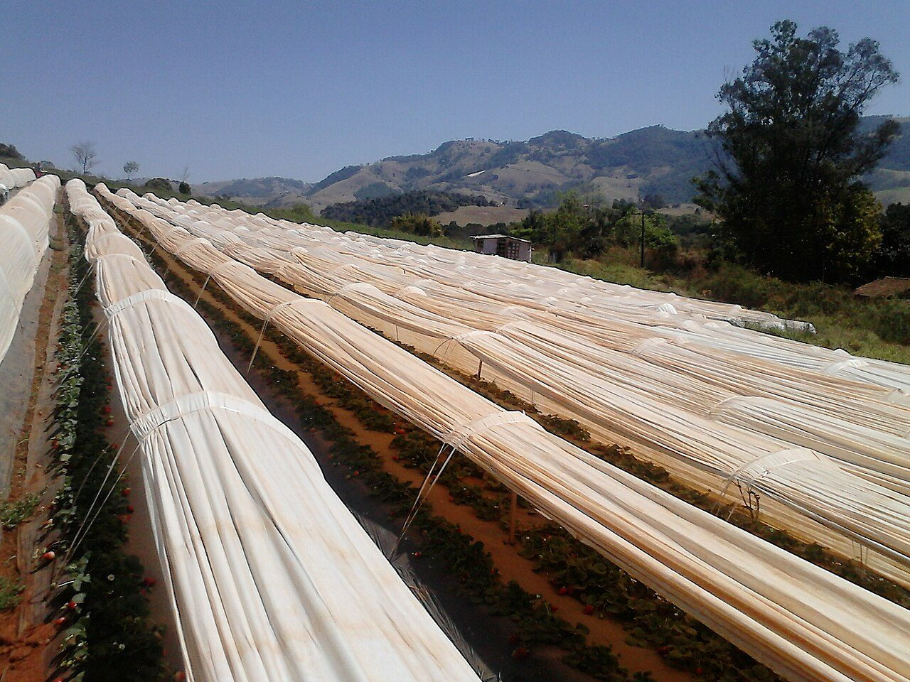
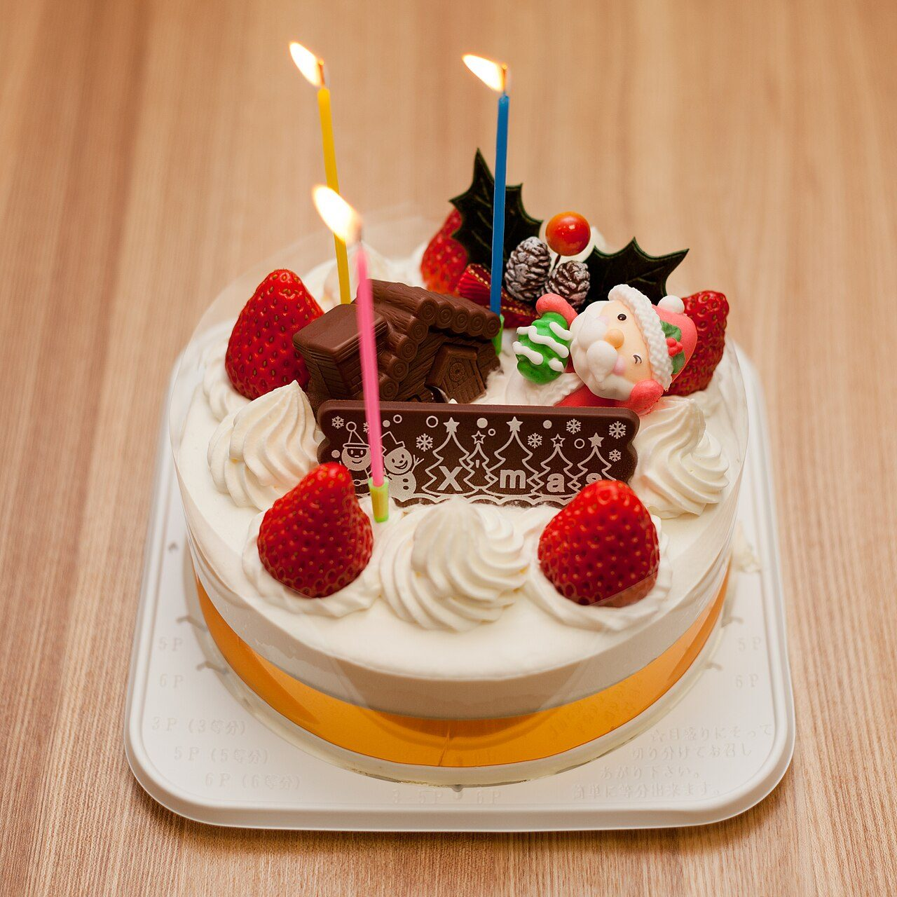

Unlike most of the world, Japanese strawberries are at their best in winter and early spring — roughly from late autumn through the cooler months. Greenhouse cultivation and strong winter demand shifted the season, and the cool growing conditions help produce concentrated, sweet fruit.
Ask most people when strawberries are in season and they will say summer. That is true of field-grown berries in much of the world. In Japan, though, the answer is surprising: the strawberry season peaks in winter, and premium berries are most abundant in the cold months rather than the warm ones.

The counter-intuitive winter peak
Strawberries are botanically a spring and early-summer fruit, and Japan's original strawberries followed that pattern. Today, however, winter is when fresh strawberries fill Japanese shops, and the harvest generally runs from around late autumn through spring. The heart of the season falls in the winter and early-spring months, then tapers as the weather warms toward summer.
Why the season shifted to winter
Two forces reshaped the Japanese strawberry calendar:

- Greenhouse cultivation. Growing under glass and film, with careful temperature control, lets farmers coax berries to ripen through the cold season when open fields could not produce fruit. This "forcing" of the harvest moved the season earlier.
- Winter demand. Strawberries are the crowning fruit on Japan's beloved Christmas shortcake, and demand around the December holidays is enormous. That pull encouraged growers to have ripe, beautiful berries ready in winter — and the winter season stuck.
Together, farming know-how and food culture turned a spring fruit into a winter icon.

Why cool-season strawberries taste so good
There is a happy side effect to the winter season. In cooler conditions the plants grow more slowly, so the fruit ripens gradually and has time to build sweetness. As temperatures rise later in the season, berries tend to develop faster and can taste more tart. That slow, cool ripening is one reason Japan's winter and early-spring strawberries are so treasured — and it ties into why they command such a premium.
How to make the most of the season
- Buy in the peak months. Winter through early spring is when you will find the widest choice and the best-eating fruit.
- Explore different varieties. Cultivars peak at slightly different times — see our guide to Japanese strawberry varieties.
- Handle them well. Fresh berries are perishable, so learn how to store strawberries to keep them at their best.
Frequently asked questions
What month are Japanese strawberries in season?
They are generally available from around late autumn through spring, with the peak in the winter and early-spring months. Availability tapers off as the weather warms toward summer.
Why are Japanese strawberries a winter fruit?
Strawberries are naturally a spring fruit, but greenhouse cultivation shifted the harvest earlier so berries are ready through winter. Strong winter demand — especially for strawberry Christmas cake — cemented the season, and cool growing conditions tend to produce concentrated, sweet fruit.
Are winter strawberries sweeter?
Cooler temperatures slow the plant's growth, which lets the fruit ripen gradually and develop sweetness. As the weather warms, berries tend to grow faster and can taste more tart — one reason Japan's winter and early-spring strawberries are so prized.
Can you get Japanese strawberries in summer?
Fresh premium Japanese strawberries are hardest to find in summer, when the main season has ended. Off-season berries exist but are less common, which is part of what makes the winter-to-spring window feel special.
Catch the season at its peak
Reserve your box while premium Japanese strawberries are at their best.
Shop & Reserve →